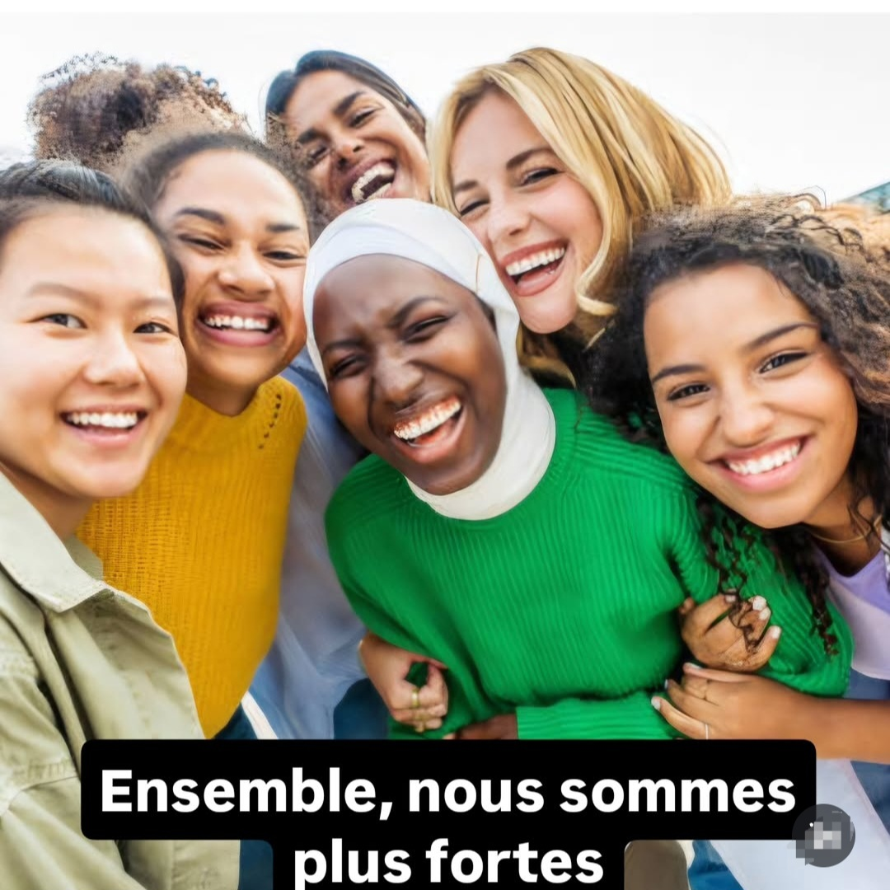

Femmaction Chartres est une association engagée qui œuvre au quotidien pour briser l'isolement, favoriser l'inclusion et tisser des liens de solidarité forts et humains au cœur de Chartres et son agglomération.
Découvrir nos actionsOffrir un espace d'accueil bienveillant, sécurisant et confidentiel pour libérer la parole et accompagner chaque femme de manière personnalisée.
Rompre la solitude au quotidien à travers des rencontres régulières, des ateliers partagés et des moments de convivialité et de partage.
Favoriser l'insertion sociale, l'accès aux droits et la confiance en soi pour permettre à chacune de devenir actrice de sa vie.
Un dispositif d'écoute d'urgence et d'orientation adapté pour soutenir les femmes en situation de détresse ou de vulnérabilité.
Des ateliers pratiques, des conseils personnalisés et un accompagnement vers le retour à l'emploi et la valorisation des compétences.
Retrouvez-nous au cœur du quartier : Tous les mercredis de 14:00 à 15:30 (sauf vacances scolaires) pour nos permanences de proximité.



"Grâce à l'association, j'ai retrouvé confiance en moi et une vraie communauté sur qui compter."
— Amina"Les permanences du mercredi m'ont permis de tisser de superbes liens et de sortir de la solitude."
— Kenza"Un accompagnement humain, chaleureux et toujours à l'écoute de nos besoins."
— Sarah